О Жиличах
Жиличи — агрогородок в Добоснянском сельсовете Кировского района Могилёвской области. Находится в 28 километрах на юго-восток от Кировска на реке Добосна (приток Днепра). Рядом с агрогородком расположена деревня с таким же названием.
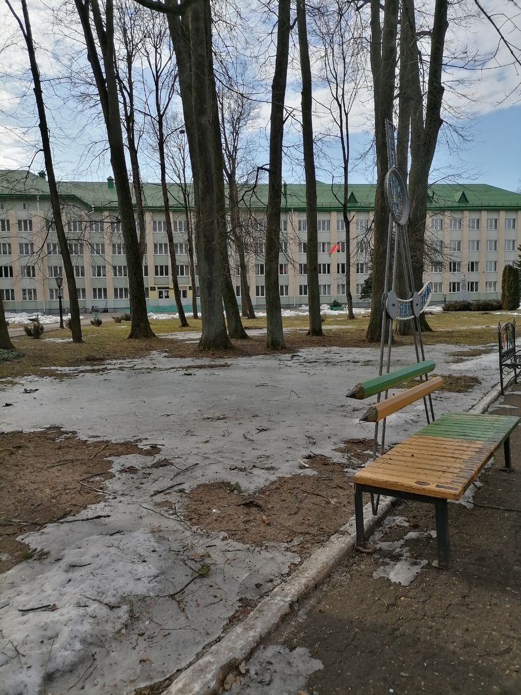
Жиличский государственный сельскохозяйственный колледж (новое здание)
История жиличей
Первое упоминание посёлка встречается в XIV веке. Некогда имение Жиличи принадлежало князьям Трабским. Затем перешло во владение Ходкевичей. Александр Иванович Ходкевич, владевший Жиличами во второй половине XV — первой половине XVI века, являлся воеводой новогрудским, старостой берестейским. Сын его Григорий Александрович в 1554—1555 годах занимал должность воеводы витебского. Принял в Заблудове печатников Ивана Федорова и Петра Мстиславца.
В начале XVII века Жиличами владели уже Сапеги, а в начале XIX — Булгаки, тоже представители известного и достопочтенного рода. Именно Игнатий Булгак построил в Жиличах в 20-30-е годы XIX века дворец. Игнатий организовал сильное, экономически грамотное хозяйство. Довел площадь своих владений до 30 тысяч гектаров. В 1897 году население Жилич составляло 489 человек. С 1897 года по май 1915 года работал винзавод. В 1909 году население составляло 492 человека, в этом же году была открыта земская школа.
После революции в 1920 году здесь был организован совхоз «Жиличи». В начале 1920-х годов была открыта 4-летняя школа. Работал кружок по ликвидации неграмотности среди взрослых. Во дворце в 1925 году была создана сельскохозяйственная артель. Весной 1927 года был создан колхоз и начала работу школа сельской молодёжи. В следующем году заработала винокурня. В 1930 году во дворце был открыт сельскохозяйственный техникум. Во время Великой Отечественной войны с конца июня 1941 года до конца июня 1944 года Жиличи были оккупированы немецкими войсками. В боях рядом с посёлком погибло 28 советских воинов, они похоронены в братской могиле в парке напротив входа во дворец. Во время войны погибло 33 местных жителя. В 1965 году совхоз «Жиличи» был объединён с учебно-производственным хозяйством сельскохозяйственного техникума в совхоз-техникум «Жиличи». В 1959 году население составляло 440 жителей, в 1970—1109, в 1986—707, в 2002—749, в 2007 году — 1398 жителей
Дворец Булгаков
Поселок Жиличи в Могилевской области известен с XIII века. В разные времена он принадлежал Трабским, Гаштольдам, Ходкевичам, Сапегам.
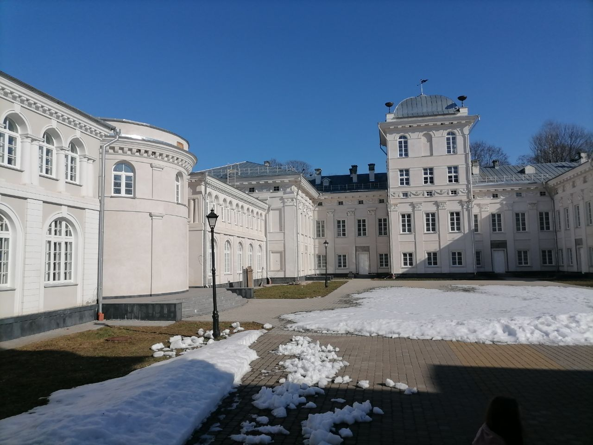
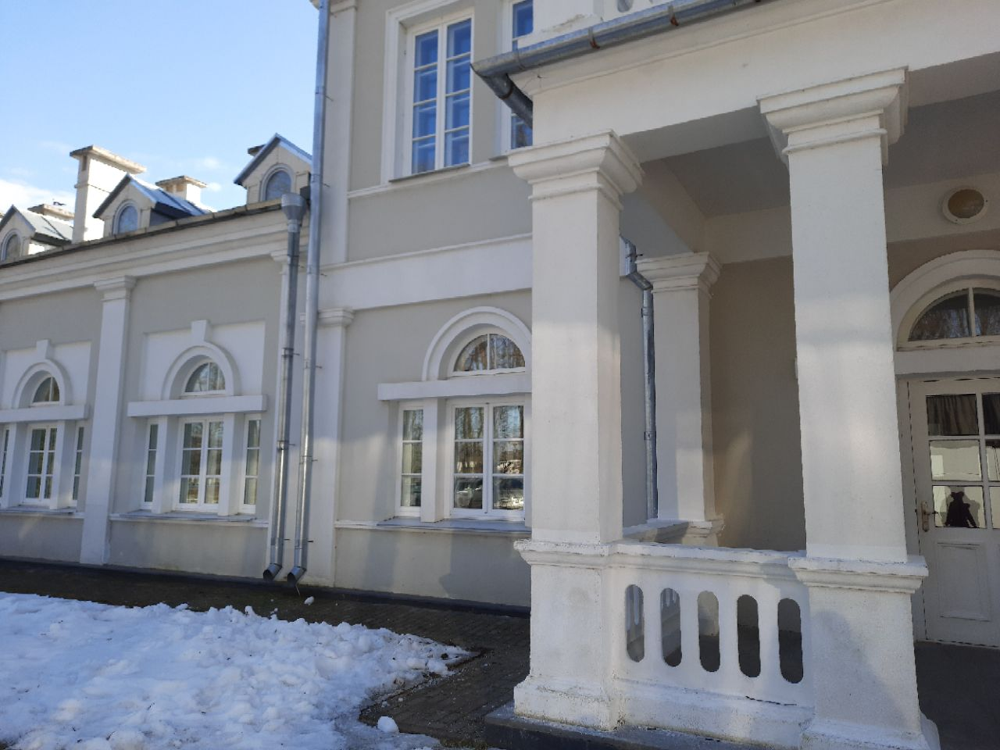
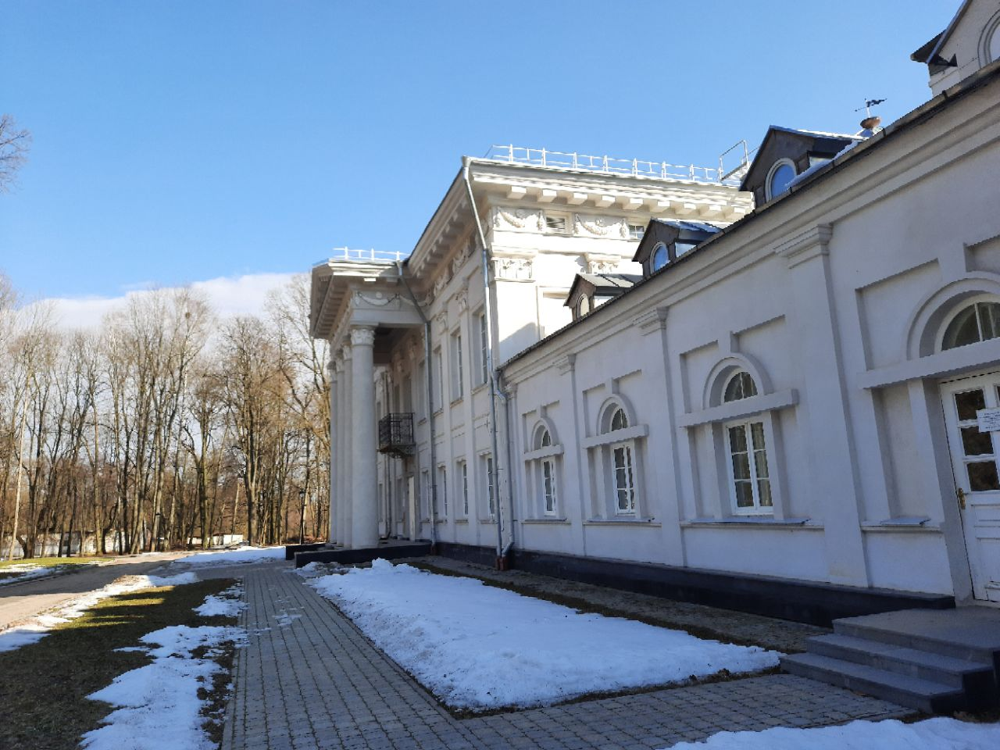
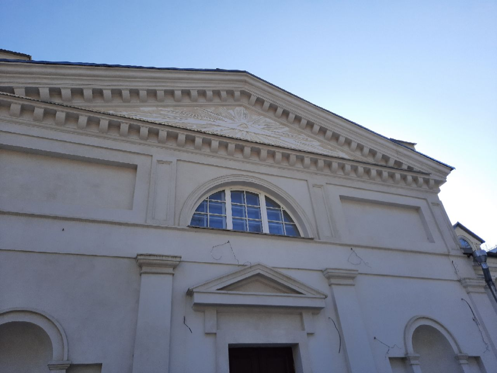
Жиличский дворец, вид снаружи
В начале XIX века имение перешло Игнатию-Казимиру Булгаку. Он полностью посвятил себя обустройству родового гнезда. В 1823 году он взял кредит, и по проекту известного архитектора Карела Подчашинского возвел большой дом с парадным портиком. Но Игнатию было этого мало и постепенно дом начал перестраиваться и превращаться в настоящий дворец.
Летом 1877 года в Жиличах останавливался Наполеон Орда, запечатлев дворец на двух рисунках.
Место было выбрано не случайно. Скорее всего Булгаки, помещая свое родовое гнездо в древний ландшафт, стремились подчеркнуть древность своей фамилии и преемственность традиции. Род Булгаков хоть и является очень древним, однако не стал таким влиятельным и известным как Радзивиллы или Сапеги. Поэтому в XIX веке они начали компенсировать это упущение.
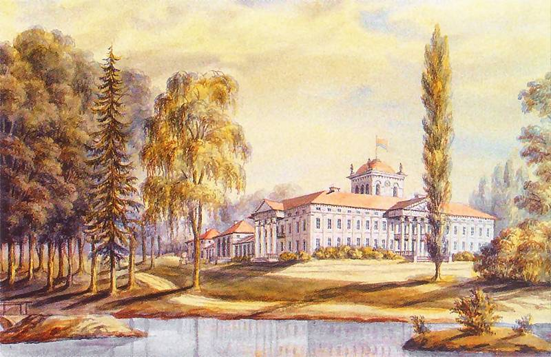
Дворец Булгаков в середине XIX века на рисунке Наполеона Орды
Основными доходами Булгаков были прибыли от крестьян и земель. Игнатию принадлежало около 30 тысяч гектар земли, его сын Эдгар удвоил эту цифру. В 1839 году на территории усадьбы был выстроен большой хозяйственный комплекс, в состав которого входил свеклосахарный завод.
Строительство таких предприятий активно продвигалось имперским правительством, они считались передовой отраслью сельского хозяйства. Правда, как и многие другие, к 1870-м годам он был переоборудован в винокурню. Их владельцам безвозмездно предоставлялись земельные участки, ссуды, разрешение на производство безакцизной водки. Эдгару Булгаку также совместно с Константином Незабытовским, будущим министром сельского хозяйства Второй Речи Посполитой, принадлежал крупнейший спиртзавод в Бобруйске.
В личной жизни Игнатий также преуспел. В 1823 году он женился на дочери предводителя дворянства Борисовского уезда Юзефа Слизня, Изабелле Слизень. Брак этот, скорее всего, в немалой степени был по расчету. Впоследствии Булгаки унаследовали имения Слизней, а также богатые коллекции искусства, предметов старины, оружия, библиотеку из шести тысяч томов старопечатных книг, восемнадцать слуцких поясов. Изабелла родила двоих детей Иосифа-Витольда и Софию, но вскоре умерла. Через несколько лет Игнатий женился на ее младшей сестре – Терезе, в результате их союза на свет появилось еще семеро детей.
Неотъемлемой частью композиции комплекса был большой парк. Были организованы пешие прогулочные маршруты. От главного фасада открывалась перспектива на озеро. На одном из островов находилась живописная летняя баня с полукруглой колоннадой. К сожалению, сегодня композиция парка нарушена.
Дворец был центром общественной жизни уезда. Здесь регулярно проводились приемы, танцы, торжества, семейные праздники, а его роскошное убранство соответствовало вкусу хозяев.

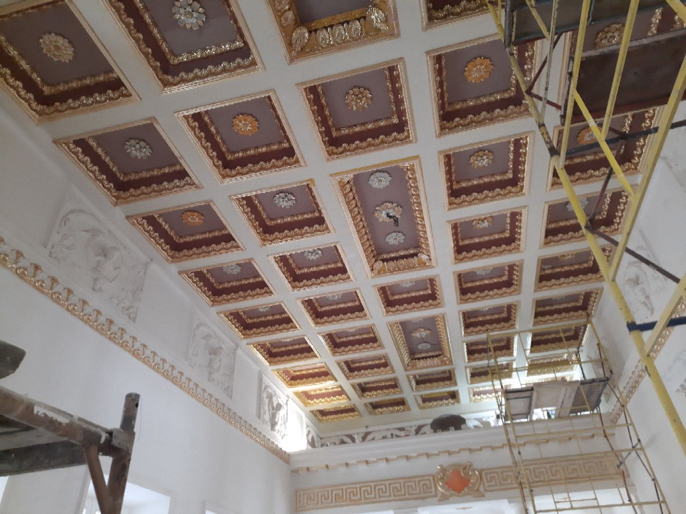
Кесонные потолки внутри дворца Булгаков
Булгаки связаны с восстанием 1863 года. В различных рапортах семья упоминается как неблагонадежная. Сообщалось, что в школах, которые располагаются в их имениях, изучается кроме русской грамоты белорусская и запрещенный польский язык.
Булгаки также попали в списки помещиков, обязанных финансово компенсировать разрушения, причиненные восставшими. Более серьезные репрессии к владельцам Жилич применены все же не были.
Упадок имения начался в XX веке, когда в 1914 году Эдгар — наследник Игнатия-Казимира — продал имение своему племяннику Эммануилу Булгаку и вывез из дворца значительную часть коллекций, хранившихся здесь.
Однако все, что осталось во дворце было разграблено местными жителями и красноармейцами. Позже в имении размещались различные советские учреждения, что не могло не отразиться на состоянии дворца. Еще до войны проводились многочисленные перепланировки помещений. Оранжерея также сильно пострадала и уже в 1939 году в ней не было ни одного целого стекла.
В годы Второй мировой войны во дворце размещался немецкий госпиталь. Дворец миновали разрушительные бои, боевые действия здесь ограничивались партизанскими налетами. Тем не менее, оккупантами была окончательно разобрана на кирпич для подсыпки дорог оранжерея.
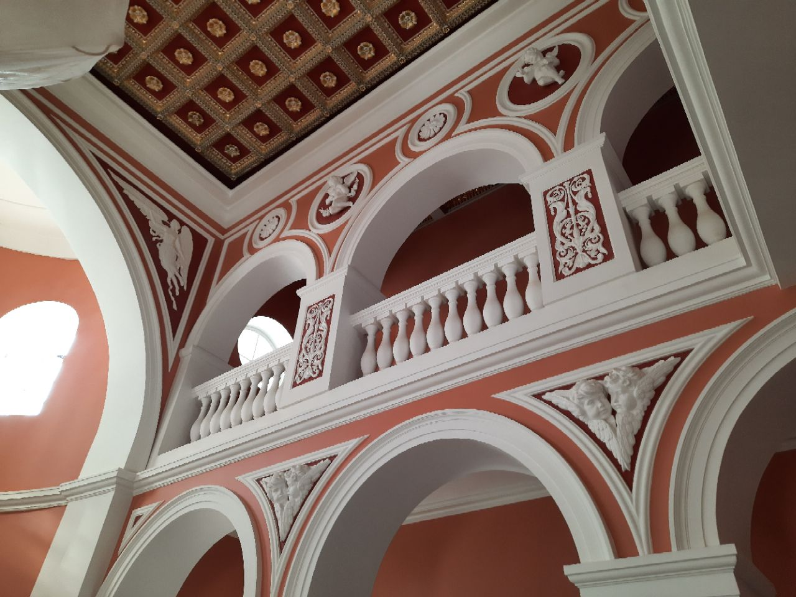
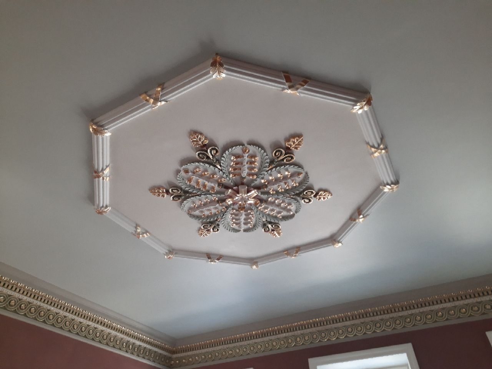
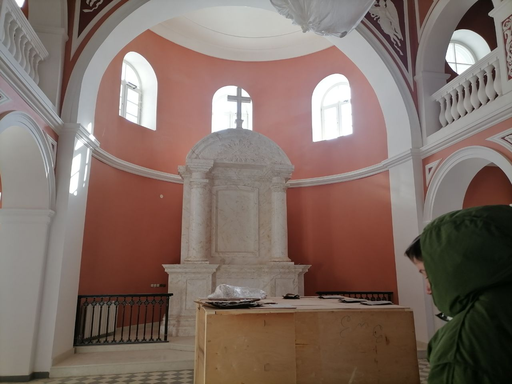
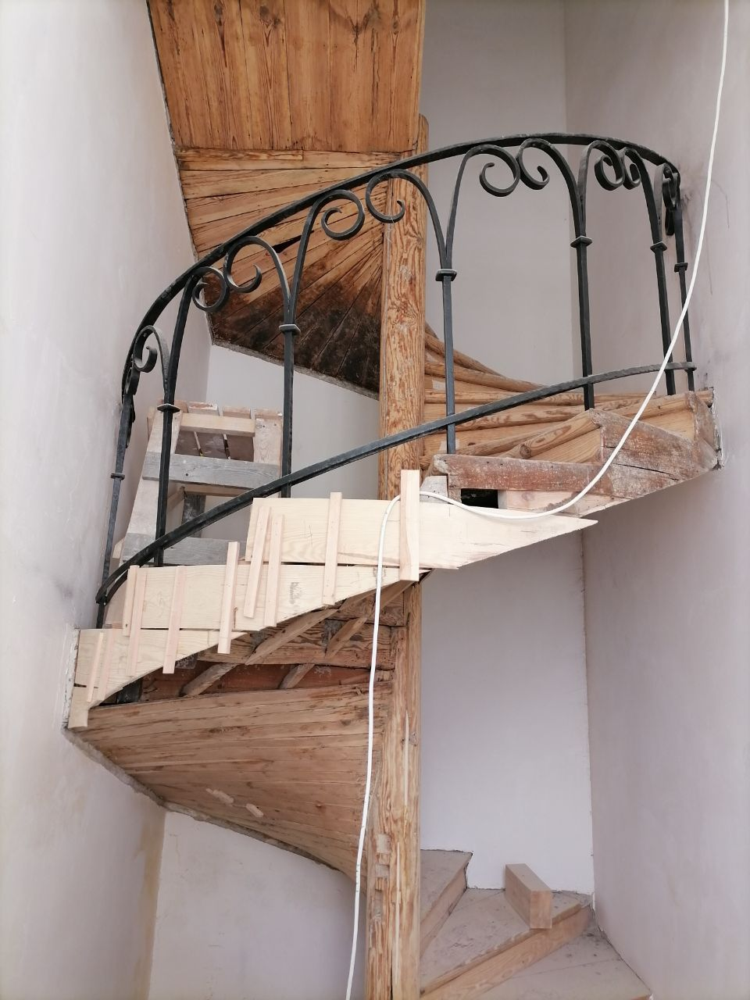
Дворец Булгаров изнутри
После войны дворец был частично заселен, в нем располагалась школа. В 1950 году здесь вновь разместился сельскохозяйственный техникум. Последовали перепланировки помещений в учебные классы. Из парадных залов был демонтирован художественный паркет, после прокладки парового отопления были разобраны кафельные печи и камины из белого мрамора, располагавшиеся во дворце.
В ходе ремонтных работ были разрушены кессонные потолки в банкетном и бальных залах. К нашему времени, несмотря на проведение ремонтных работ, сильно начала протекать крыша, конструкции обветшали, из-за чего и потребовалась реставрация, которая ведется по сей день.
Сегодня во дворце создан музей, который рассказывает и об истории имения Булгаков, и об особенностях самого региона.
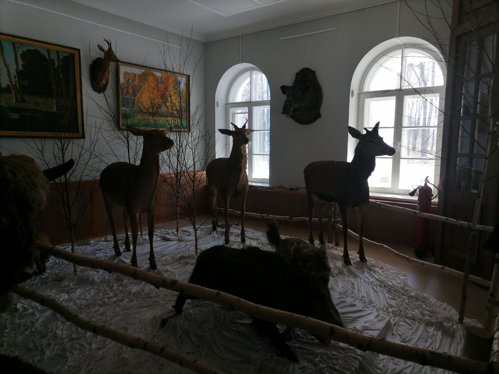
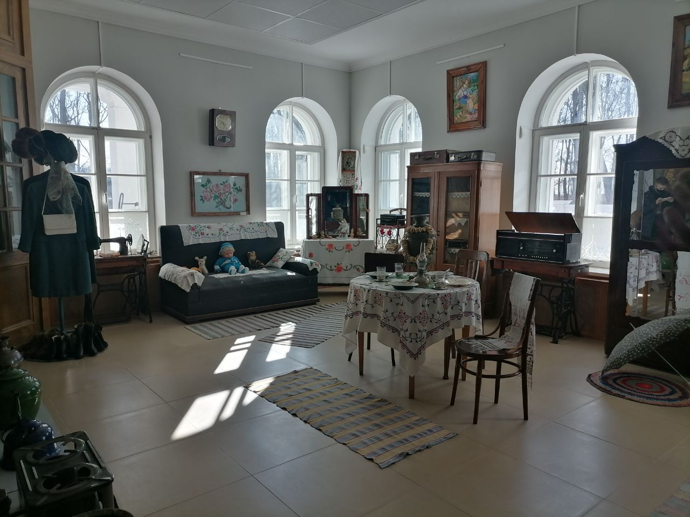
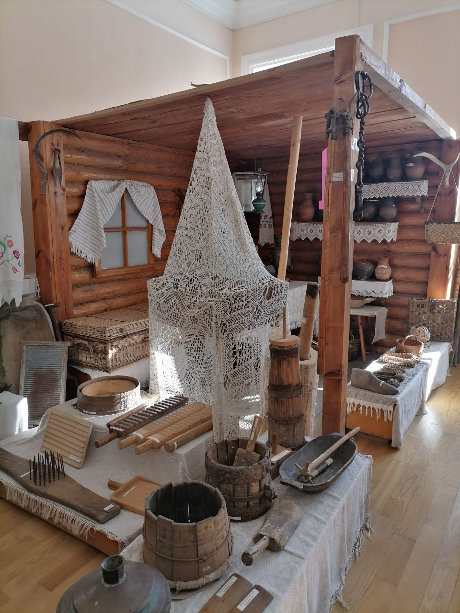

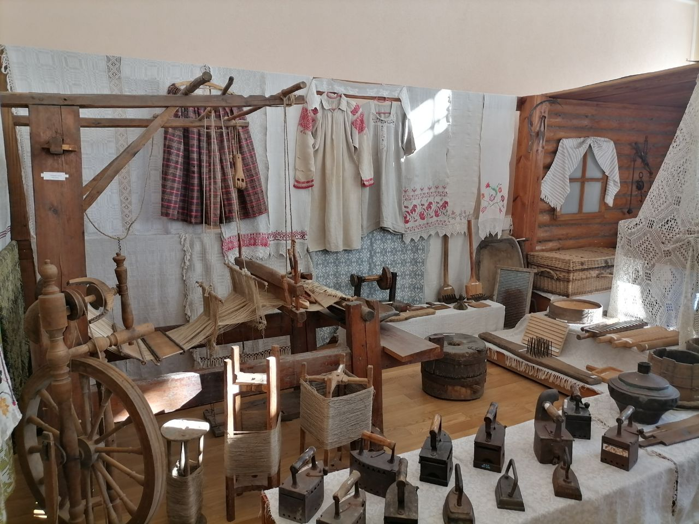
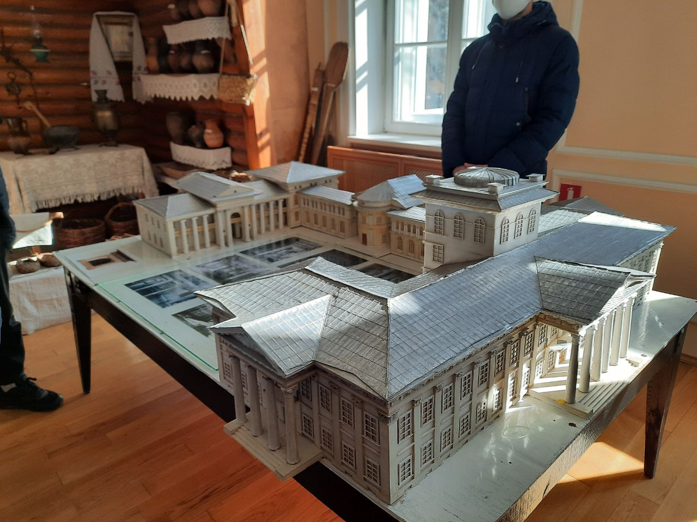
Музей внутри дворца Булгаков
Залы музея располагаются на первом и втором этажах южного флигеля дворца, воссозданного в 2009-2011 годах во время проведения реставрационно-восстановительных работ. Всего в музее находится четыре экспозиции. Первый — «Диванная комната», где представлены предметы мебели в стиле ампир и рококо. Там же можно увидеть архитектурный макет дворца. Экспозиция «История. Этнография» представляет крестьянскую избу дореволюционного времени, разнообразные предметы обстановки и утвари. Вниманию посетителей предлагается осмотр бондарной и глиняной посуды, домашней мельницы, тканых, плетёных изделий. На фотовыставке «Моменты красоты» в холле 2-го этажа демонстрируются фотографии имения Добосна, выполненные основоположником белорусской художественной фотографии Яном Булгаком — еще одного представителя рода Булгаков — сделанные в 1911 году.
На первом этаже расположена постоянно действующая выставка «Старая квартира» - образец квартиры с предметами быта 1950-1980-х годов. Есть в музее и природоведческая экспозиция, где можно увидеть уголок природы с чучелами диких животных.